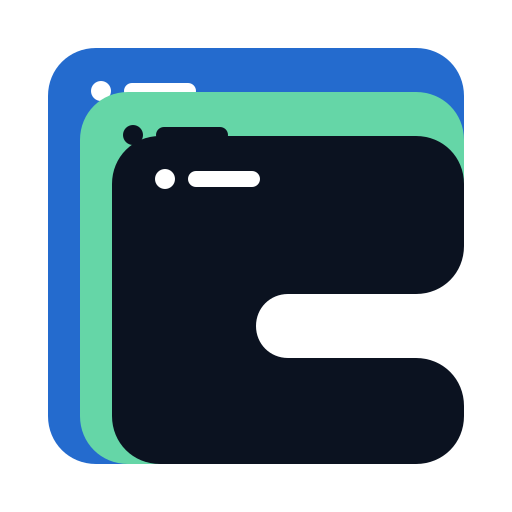

Cascading native windows
One SVG rendered at its practical shipping sizes. The 128 px mark is the Asset Library target; 16 px is only a stress test.
Dark surface

GodotCascadeDeclarative native UI for Godot
One SVG rendered at its practical shipping sizes. The 128 px mark is the Asset Library target; 16 px is only a stress test.
